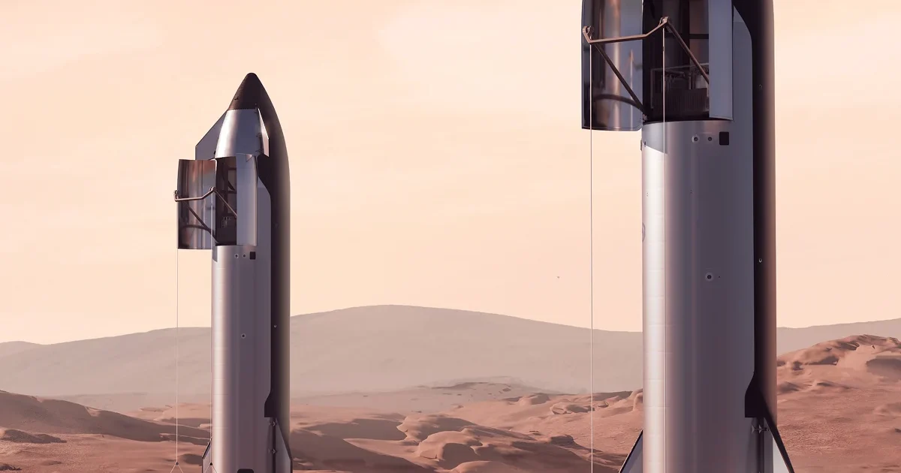

Security & Crime · 14 Nov 2026
SpaceX’s Starship enters Earth’s orbit

Elon Musk’s SpaceX successfully launched its Starship spacecraft into Earth’s orbit, but an unspecified problem forced it to abort the booster recovery. Read More: https://punchng.com/spacexs-starship-enters-earths-orbit/
Multiple independent publishers are reporting on the same development: SpaceX’s Starship enters Earth’s orbit.
The available reports place the development in the Security & Crime category. The accounts were compared for agreement on the central event rather than simply shared names or broad topics.
One of the available reports describes the development this way: Elon Musk’s SpaceX successfully launched its Starship spacecraft into Earth’s orbit, but an unspecified problem forced it to abort the booster recovery. Read More: https://punchng.com/spacexs-starship-enters-earths-orbit/
Readers should consult the linked source reports for additional context, updates and details that may change as the story develops.
Sources
This article was produced by the C. O. Eric AI Newsroom from the cited sources. It is published only after automated evidence and safety checks.